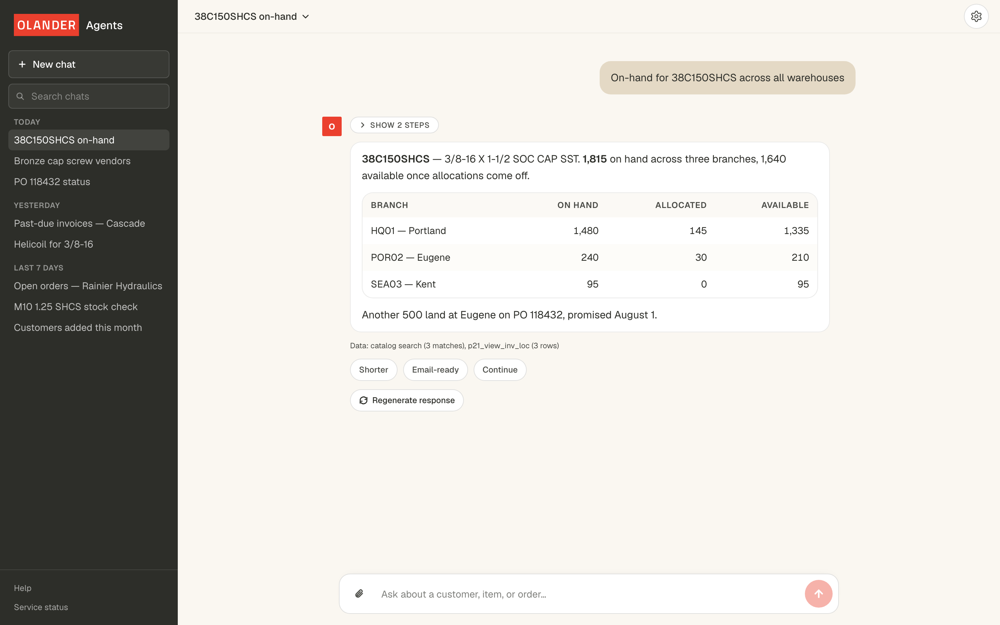

Contract
projects that I was contracted to build
-

PapeAgNet
A geospatial analytics platform for Oregon's largest equipment dealer, serving 1,500 employees across six states.
Technical specifications
- What it is
- A single map. County farm data as a choropleth, with rival dealerships plotted on top.
- Data
- USDA Census of Agriculture, 250 counties across six states. Boundaries from the Census Bureau's TIGER/Line files.
- Built on
- React, TypeScript, Vite, MapLibre GL.
- Hosting
- Vercel.
-

AI Sales Agent
A streaming chat agent that turns plain-English questions into live ERP lookups across catalog, inventory, and orders, currently serving around 70 employees.
Technical specifications
- What it is
- A chat window over the ERP. Ask in plain English, the model runs the lookups and answers from the rows.
- Data
- Epicor Prophet 21: catalog, stock, customers, orders. Read through a fixed-IP proxy. Catalog search on a Qdrant vector index.
- Built on
- Next.js, TypeScript, GPT-5 nano. Neon Postgres, Qdrant, Microsoft SSO.
- Hosting
- Vercel, plus one always-on proxy for the fixed IP.